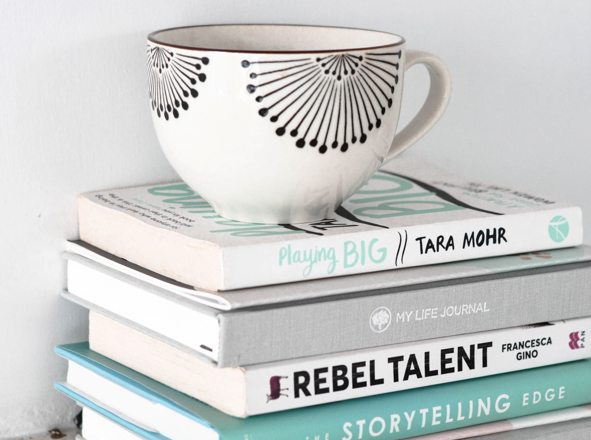

The library is hosting a booksale one weekend a month. We have over 50,000 used books, CD's, DVD's, magazines, records and more for all ages! Numbered tickets will be handed out at the Main Room on Saturday morning at 8 AM. 100% of the proceeds will help your local libraries!
WHERE
- Main Room (Adult's Collection) located along the north driveway and adjacent to the Charleston Shopping Center
- New Room (Children's Collection) located near the Pavilion and Greendell School
- Rooms K6 and K7 (Bargains)
WHEN
Every third weekend of the month 9 AM - 5 PM. The Children's and Bargain Rooms will open an hour early on Sunday.
PRICES
- Hardcover Books: $1
- Paperback Books: $0.50
- In the Bargain Room, children's books are $0.25. On Sundays, all items are 50% off!
- Gift cards are available for purchase with $5 denominations
DONATIONS
If you have donations you want to give to the library, please bring them to the Main Room.
QUESTIONS?
Have questions? Please contact us by phone at 630-258-7410.

Grab a few books and get cozy!